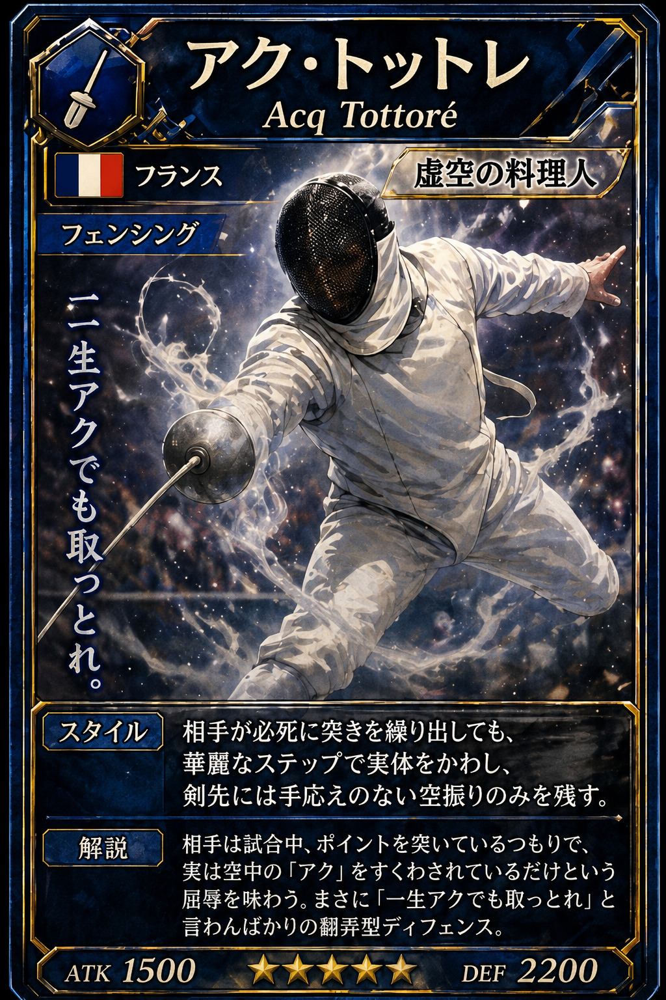
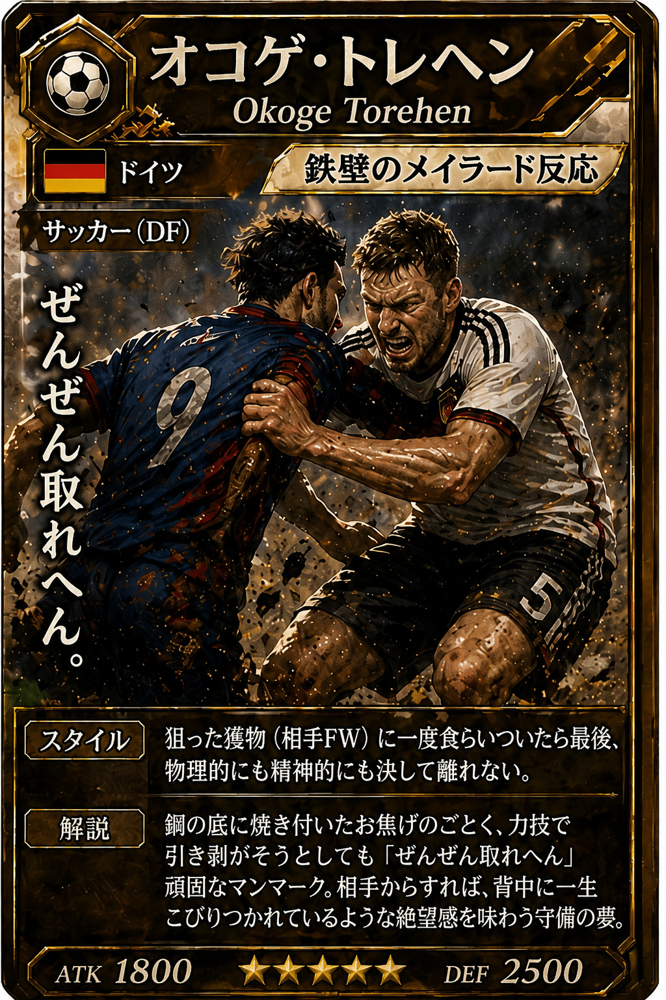
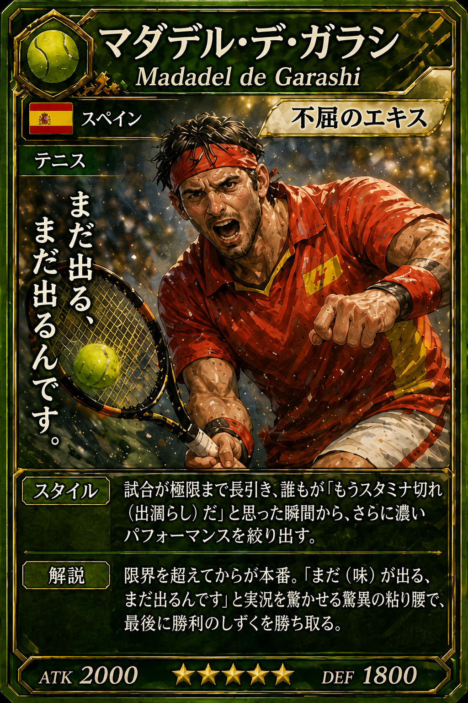
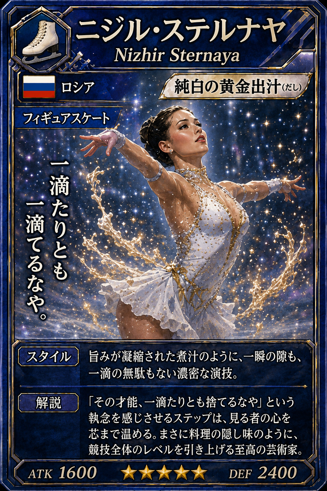
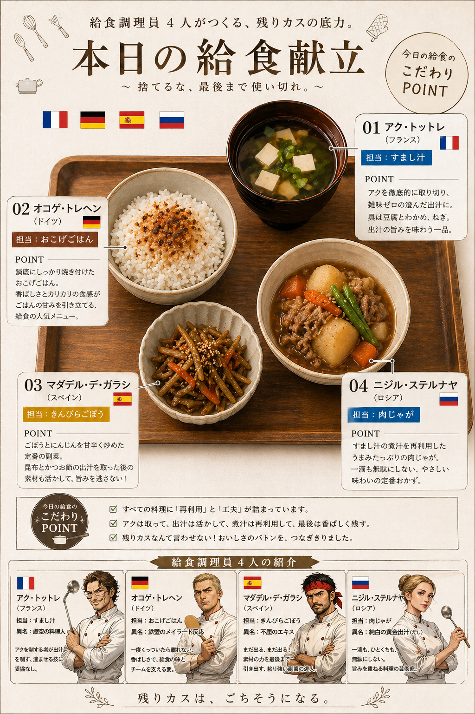

PROJECT TEASER
NWA
No Waste Athletes -Naniwa World Alchemy-
プロスポーツ選手が給食調理員として
全校生徒分の給食を完成させる──
究極の調理シミュレーション




CONCEPT
残りカスは、ごちそうになる。
アクを取り、出汁を活かし、煮汁は再利用して、最後は香ばしく残す。
すべての料理に「再利用」と「工夫」が詰まっている。
残りカスなんて言わせない──おいしさのバトンを、つなぎきりました。
4人のプロアスリートが、それぞれの競技スキルを駆使して挑む、
前代未聞の給食シミュレーション。
「捨てるな、最後まで使い切れ。」
CHARACTERS
給食調理員 4人の紹介
アク・トットレ
Acq Tottoré
フランス
フェンシング
担当：すまし汁
アクを徹底的に取り切り、雑味ゼロの澄んだ出汁に。
剣先には手応えのない空振りのみを残す翻弄型ディフェンス。
「一生アクでも取っとれ。」
ATK
1500
DEF
2200
★★★★★
オコゲ・トレヘン
Okoge Torehen
ドイツ
サッカー（DF）
担当：おこげごはん
鍋底にしっかり焼き付けた香ばしいおこげ。
一度食らいついたら最後、物理的にも精神的にも決して離れない。
「ぜんぜん取れへん。」
ATK
1800
DEF
2500
★★★★★
マダデル・デ・ガラシ
Madadel de Garashi
スペイン
テニス
担当：きんぴらごぼう
昆布とかつお節の出汁を取った後の素材も活かして、旨みを逃さない。
限界を超えてからが本番、驚異の粘り腰。
「まだ出る、まだ出るんです。」
ATK
2000
DEF
1800
★★★★★
ニジル・ステルナヤ
Nizhir Sternaya
ロシア
フィギュアスケート
担当：肉じゃが
すまし汁の煮汁を再利用した、一滴も無駄にしない優しい味わい。
一瞬の隙も、一滴の無駄もない濃密な演技。
「一滴たりとも捨てるなや。」
ATK
1600
DEF
2400
★★★★★
TODAY'S MENU
本日の給食献立
すべての料理に「再利用」と「工夫」が詰まっている。
アクは取って、出汁は活かして、煮汁は再利用して、最後は香ばしく残す。
